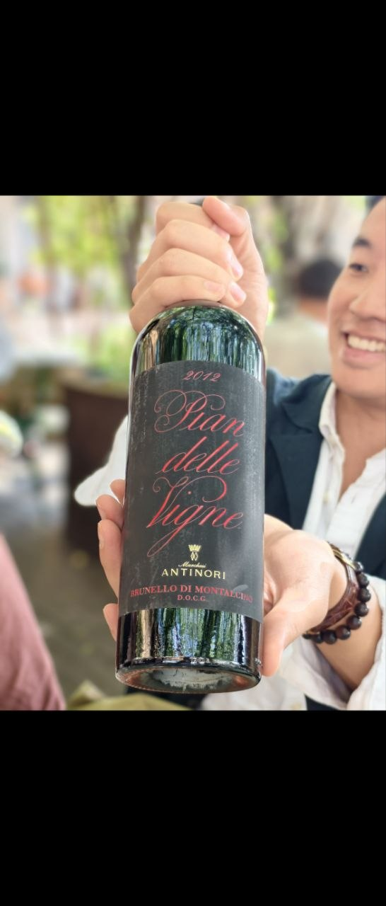

No. 026
Red
Pian delle Vigne Brunello di Montalcino
Marchesi Antinori — Tenuta Pian delle Vigne · 2012
red cherry·violet·sweet spice·balsamic·silky tannins
Antinori's Montalcino estate: 100% Sangiovese, two years in large oak, bottled April 2015 — the 2012 is mid-weight and perfumed rather than powerful.
originItaly · Toscana · Montalcino
appellationBrunello di Montalcino DOCG
grapesSangiovese
ABV14.0%
date28 Oct 2026*
Online: No HK listing for the 2012 found (WineWorld, Millesima HK, Buonissimo, HK Online Wine Shop, Casa Certa all carry 2016–2021 only). Closest same-wine HK listing: WineWorld 2016 at HK$520 — checked 2026-10-28
* dated when the bottle was logged, not when it was opened — tell me the real day and I will correct it.
BACKGROUND
Pian delle Vigne is Antinori's Montalcino property, 6 km south-west of the town and named after the 19th-century railway station that still stands by the vines. The family bought the 184-hectare estate, 65 ha under vine, in 1995 and made its first Brunello the same year, farming it deliberately traditionally: long macerations, large oak casks rather than small barrels.
2012 was hot and very dry — no rain from July to mid-September — yet drew the Consorzio's five stars while dividing critics: cool sites made balanced wines, hot slopes gave tough, alcoholic ones. Antinori picked late September to early October, macerated about three weeks at 28 °C, aged two years in cask and bottled in April 2015.
antinori.it technical sheets (2012) · Kerin O'Keefe / Decanter (2012 vintage) · WineWorld HK (2016 price reference)